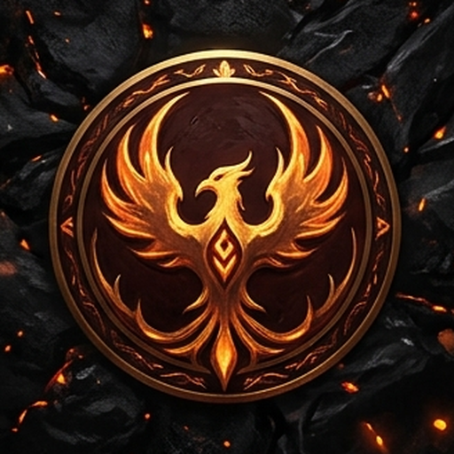
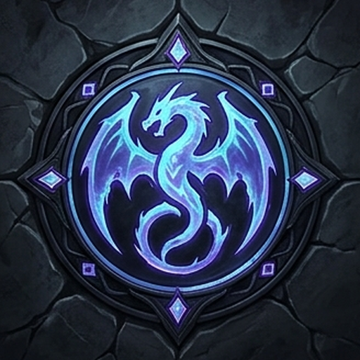

VS

暗影奇譚・魔幻暗棋
DARK FANTASY BANQI 3D
播放史詩片頭並進入
直接進入選單
跳過片頭 ⏭
3D 寫實奇幻戰棋
暗影奇譚・魔幻暗棋
烈焰聖殿與冥淵暗影的宿命對決——翻開命運之棋，運籌帷幄。
對戰模式
單人對戰 AI
雙人同機對戰
AI 戰術難度
簡單
普通
困難
進階規則：暗棋連吃（連殺）
吃子後若可繼續吃敵棋，允許連續追擊
開啟戰局
重播片頭影片
暗影奇譚
單人・普通
請翻開第一枚命運之棋
和局計數 0/50
結束連吃
🎥 視角：斜視
🎵 音樂
🔊 語音
↩ 悔棋
↻ 重開
☰ 選單
烈焰聖殿・帥
「三軍聽令，以烈焰焚盡宵小！」
烈焰聖殿 獲勝！
紅方徹底殲滅敵軍，主宰了暗影戰場。
總回合數：0
再戰一局
返回主選單